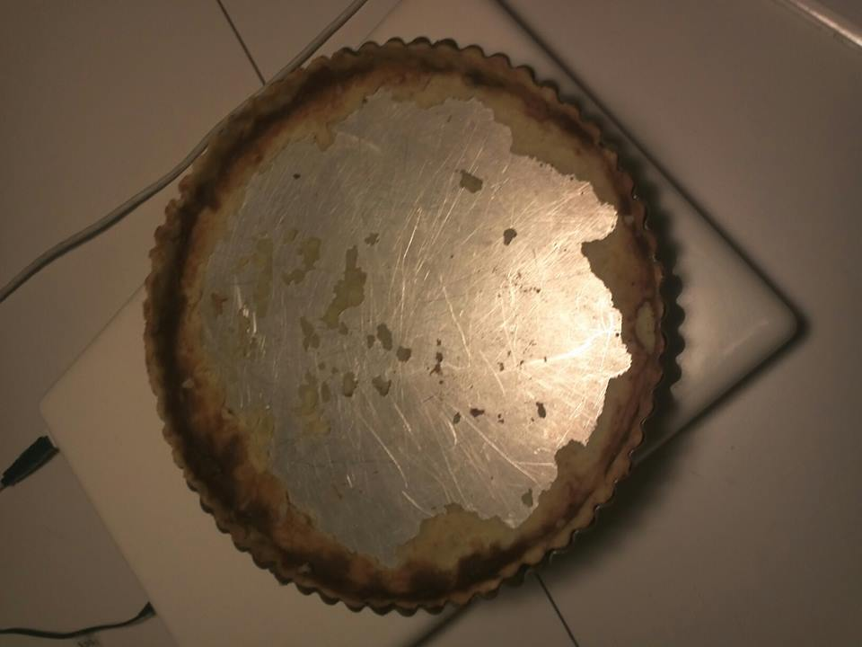
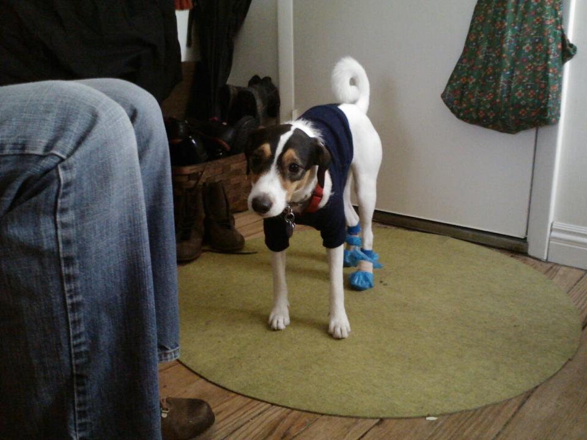

Fun Fact #1
I can jump as high as your chin if you give me a tortilla. Don't believe me? Watch this video.
Fun Fact #2
I can open up oven doors and climb inside them, provided you leave a delicious apple tart for me to eat. Yeah, this was yummy.
Not a Fun Fact #3
Winter salt does suck, especially if you get a cut on your pads. I had to wear these diy booties for three weeks!
